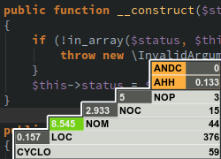

Yii2 Application Development Cookbook

- Категория
- Дата публикации
Те, кто следит за судьбой PHP и Yii, вероятно заметили в новостях Yii2, предновогоднем PHP-дайджесте на Habrahabr и в блоге RMCreative Александра Макарова о выходе новой редакции популярной книги практических рецептов Yii Development Cookbook, переписанной в этот раз на Yii2.
Читать далее...